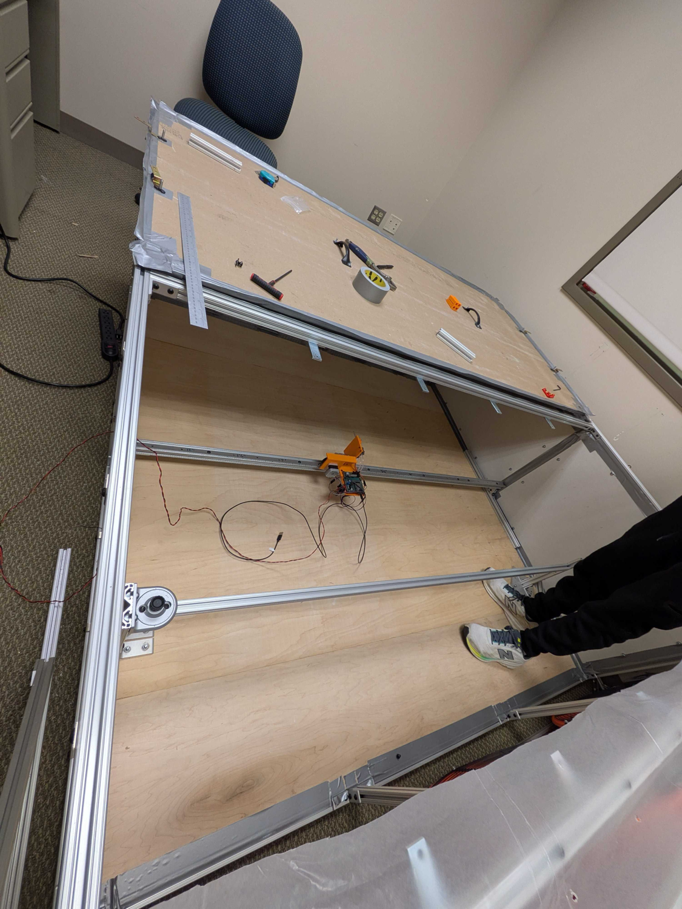
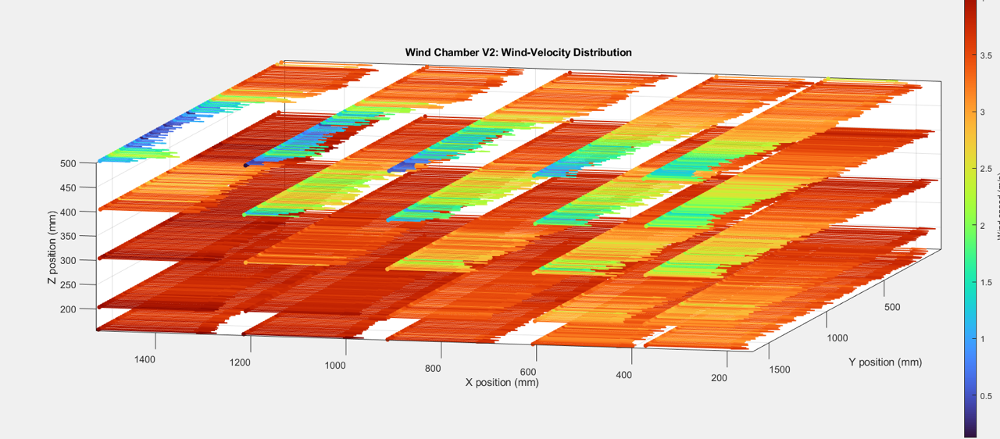
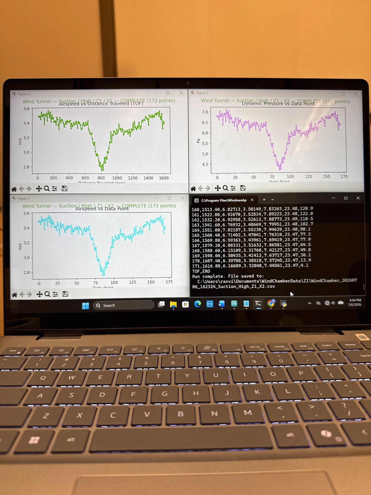

The Sailor Rover research program studies a wind-driven rover concept whose motion depends on aerodynamic forces. My work spans the experimental infrastructure, sensing and data acquisition, and control systems needed to characterize and command the rover.
Instead of splitting this research into unrelated portfolio entries, this page keeps the program together and links to the three technical workstreams below.

Autonomous chamber scanning, differential-pressure sensing, firmware, and a Python data pipeline for high-density wind-field measurements.
Open Wind Profiler →Development, characterization, and testing of the controlled-flow facility used to validate rover aerodynamic behavior.
Open Wind Chamber →Closed-loop control development for rover actuation, progressing from PID experiments toward an integrated embedded control architecture.
Open Rover Controls →The chamber and profiler are designed as one measurement chain: establish controlled flow, sweep the sensing system through the test volume, and use the resulting velocity field to evaluate future rover configurations and control strategies.

